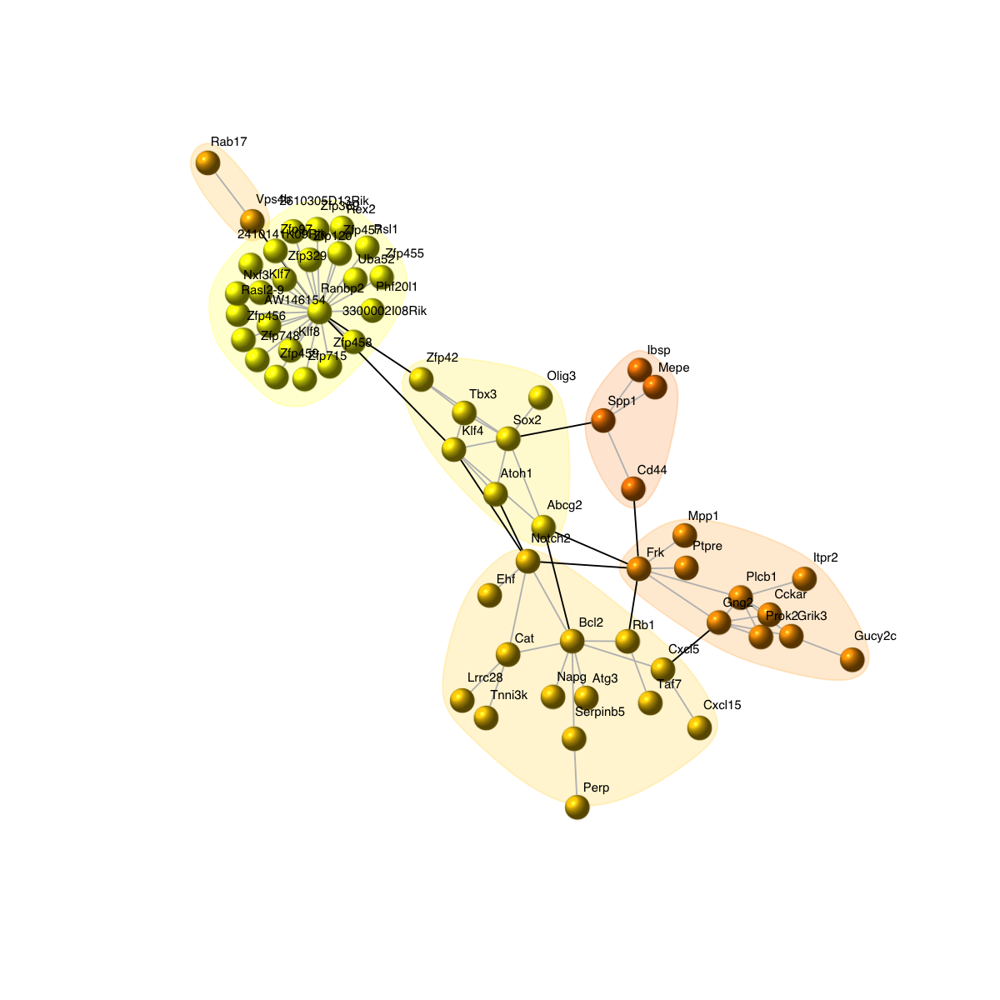
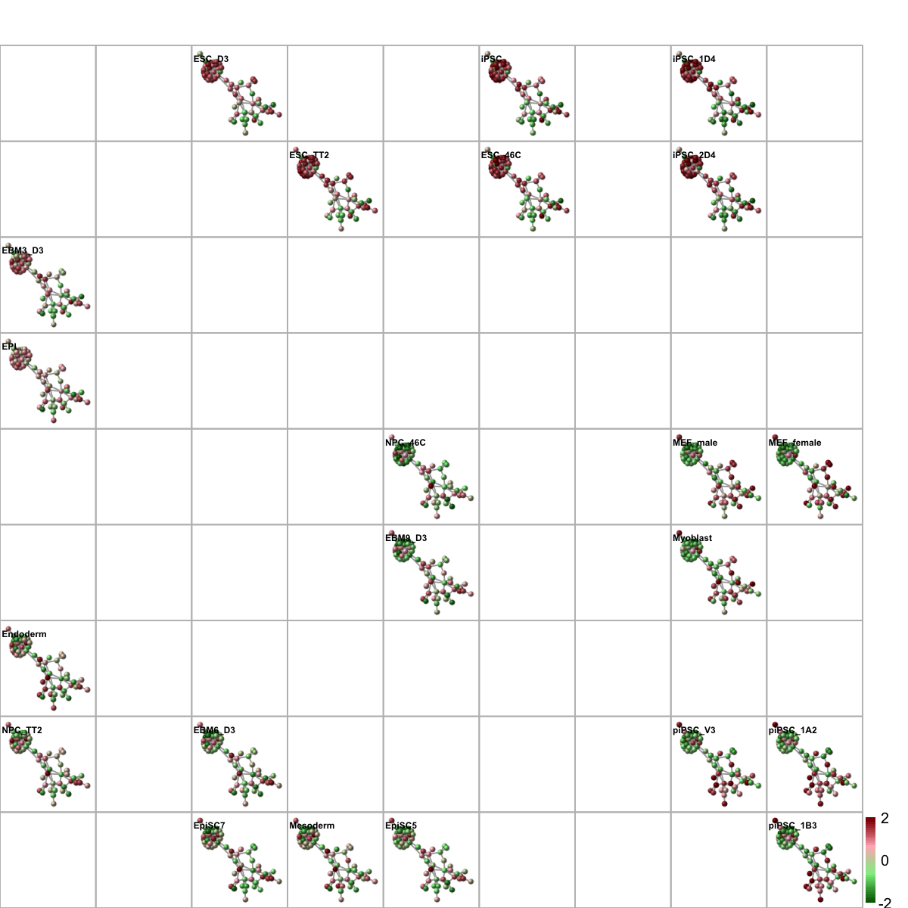
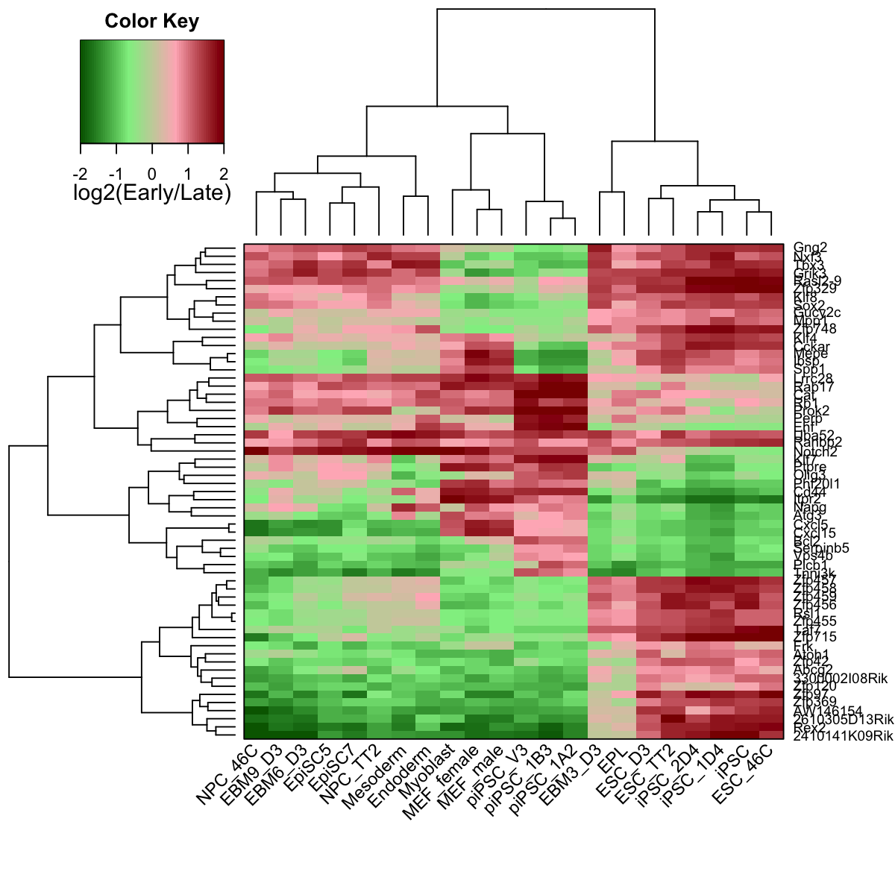
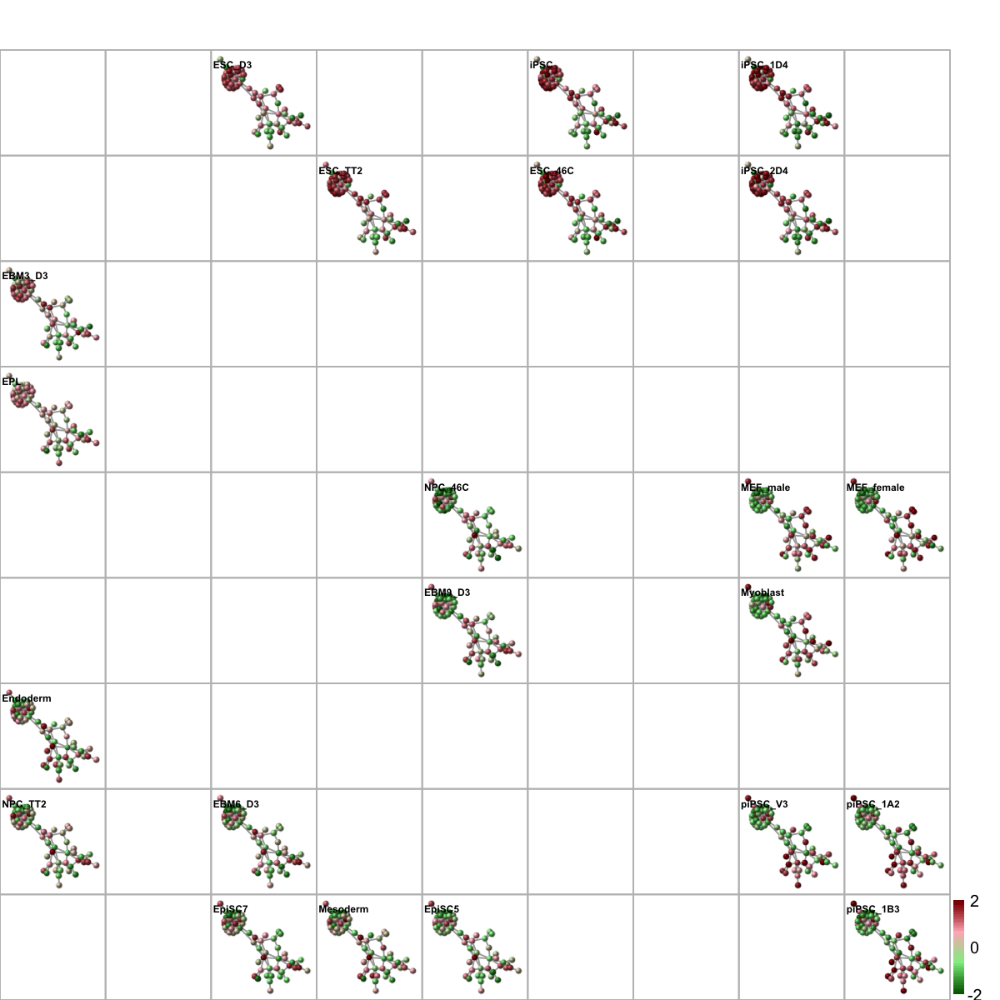
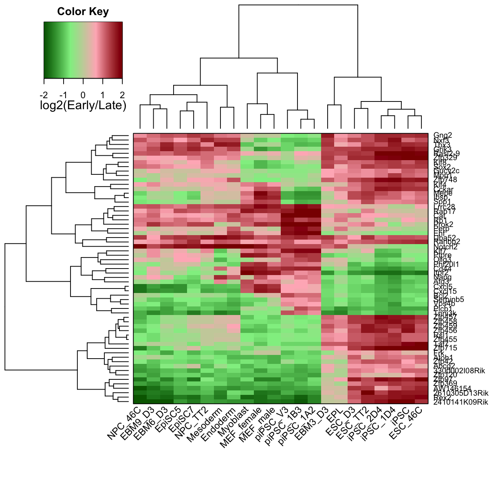
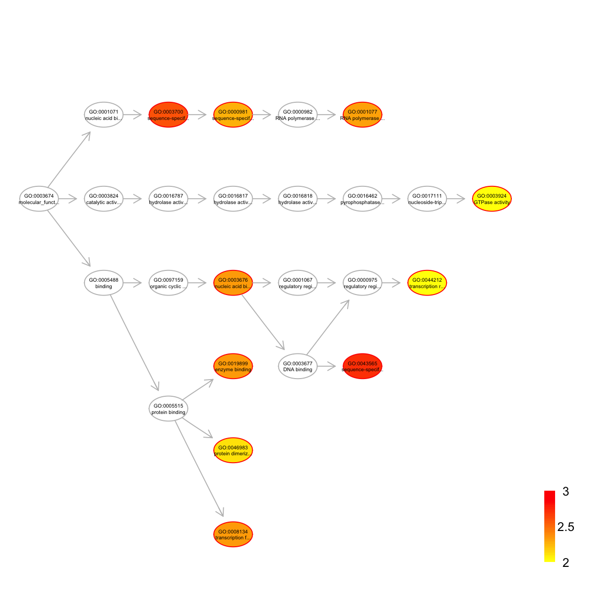

[1] "CpG" "EX" "RT"
# Load the package 'dnet'
library(dnet)
# Load or/and install packages "Biobase" and "limma" that are specifically used in this demo
for(pkg in c("Biobase","limma")){
if(!require(pkg, character.only=T)){
source("http://bioconductor.org/biocLite.R")
biocLite(pkg)
lapply(pkg, library, character.only=T)
}
}
# Here, we are interested to analyse replication timing data and their difference between different sample groups
# To this end, it is better to create the 'eset' object including sample grouping indication information
group <- c(rep("ESC",3), rep("iPSC",3), rep("eEpiblast",2), rep("lEpiblast",2), rep("Ectoderm",4), rep("Mesoderm",1), rep("Endoderm",1), rep("piPSC",3), rep("Myoblast",3))
pdata <- data.frame(group=group, row.names=colnames(RT))
esetGene <- new("ExpressionSet", exprs=as.matrix(RT), phenoData=as(pdata,"AnnotatedDataFrame"))
esetGene
ExpressionSet (storageMode: lockedEnvironment)
assayData: 17292 features, 22 samples
element names: exprs
protocolData: none
phenoData
sampleNames: ESC_46C ESC_D3 ... Myoblast (22 total)
varLabels: group
varMetadata: labelDescription
featureData: none
experimentData: use 'experimentData(object)'
Annotation:
# Look at the samples and their groups belonging to
pData(esetGene)
group
ESC_46C ESC
ESC_D3 ESC
ESC_TT2 ESC
iPSC iPSC
iPSC_1D4 iPSC
iPSC_2D4 iPSC
EPL eEpiblast
EBM3_D3 eEpiblast
EpiSC5 lEpiblast
EpiSC7 lEpiblast
EBM6_D3 Ectoderm
NPC_46C Ectoderm
NPC_TT2 Ectoderm
EBM9_D3 Ectoderm
Mesoderm Mesoderm
Endoderm Endoderm
piPSC_1A2 piPSC
piPSC_1B3 piPSC
piPSC_V3 piPSC
MEF_female Myoblast
MEF_male Myoblast
Myoblast Myoblast
'org.Mm.string' (from http://supfam.org/dnet/RData/1.0.7/org.Mm.string.RData) has been loaded into the working environment
org.Mm.string
IGRAPH UN-- 19361 896962 --
+ attr: name (v/c), seqid (v/c), geneid (v/n), symbol (v/c),
| description (v/c), neighborhood_score (e/n), fusion_score (e/n),
| cooccurence_score (e/n), coexpression_score (e/n), experimental_score
| (e/n), database_score (e/n), textmining_score (e/n), combined_score
| (e/n)
+ edges (vertex names):
[1] 8744755--8747520 8747520--8755454 8739140--8755423 8755589--8757392
[5] 8750519--8755589 8749377--8756682 8739654--8752586 8738750--8757113
[9] 8743582--8751281 8751281--8754203 8738814--8747960 8736800--8750299
[13] 8736177--8736800 8736800--8752432 8736800--8756583 8735507--8743694
+ ... omitted several edges
# Look at the first 5 node information (gene symbols)
V(org.Mm.string)$symbol[1:5]
[1] "Enpp5" "Gabrb2" "Gm13212" "Tarsl2" "Fam134b"
IGRAPH UN-- 13793 651354 --
+ attr: name (v/c), seqid (v/c), geneid (v/n), symbol (v/c),
| description (v/c)
+ edges (vertex names):
[1] Enpp5 --Car5a Enpp5 --Car5b Enpp5 --Cdc5l Gabrb2--Fxyd3
[5] Gabrb2--Ube3a Gabrb2--Clcn1 Gabrb2--Gabrr2 Gabrb2--Gabrg1
[9] Gabrb2--Clcnkb Gabrb2--Clcnka Gabrb2--Grm3 Gabrb2--Ttyh2
[13] Gabrb2--Slc32a1 Gabrb2--Clic6 Gabrb2--Gabrp Gabrb2--Gabrd
[17] Gabrb2--Glra1 Gabrb2--Glrb Gabrb2--Gabbr1 Gabrb2--Gabra1
[21] Gabrb2--Gabrr1 Gabrb2--Gabrb1 Gabrb2--Gabarapl1 Gabrb2--Nsf
[25] Gabrb2--Slc26a6 Gabrb2--Gabrg2 Gabrb2--Gad1 Gabrb2--Gabra3
+ ... omitted several edges
# Identification of gene-active subnetwork
# 1) obtain the information associated with nodes/genes, such as the p-value significance as node information
# Here, we use the package 'limma' to identify differential Replication timing
## define the design matrix in an order manner
all <- as.vector(pData(esetGene)$group)
level <- levels(factor(all))
index_level <- sapply(level, function(x) which(all==x)[1])
level_sorted <- all[sort(index_level, decreasing=F)]
design <- sapply(level_sorted, function(x) as.numeric(all==x)) # Convert a factor column to multiple boolean columns
design
ESC iPSC eEpiblast lEpiblast Ectoderm Mesoderm Endoderm piPSC Myoblast
[1,] 1 0 0 0 0 0 0 0 0
[2,] 1 0 0 0 0 0 0 0 0
[3,] 1 0 0 0 0 0 0 0 0
[4,] 0 1 0 0 0 0 0 0 0
[5,] 0 1 0 0 0 0 0 0 0
[6,] 0 1 0 0 0 0 0 0 0
[7,] 0 0 1 0 0 0 0 0 0
[8,] 0 0 1 0 0 0 0 0 0
[9,] 0 0 0 1 0 0 0 0 0
[10,] 0 0 0 1 0 0 0 0 0
[11,] 0 0 0 0 1 0 0 0 0
[12,] 0 0 0 0 1 0 0 0 0
[13,] 0 0 0 0 1 0 0 0 0
[14,] 0 0 0 0 1 0 0 0 0
[15,] 0 0 0 0 0 1 0 0 0
[16,] 0 0 0 0 0 0 1 0 0
[17,] 0 0 0 0 0 0 0 1 0
[18,] 0 0 0 0 0 0 0 1 0
[19,] 0 0 0 0 0 0 0 1 0
[20,] 0 0 0 0 0 0 0 0 1
[21,] 0 0 0 0 0 0 0 0 1
[22,] 0 0 0 0 0 0 0 0 1
[1] "iPSC_ESC" "eEpiblast_ESC" "lEpiblast_ESC"
[4] "Ectoderm_ESC" "Mesoderm_ESC" "Endoderm_ESC"
[7] "piPSC_ESC" "Myoblast_ESC" "eEpiblast_iPSC"
[10] "lEpiblast_iPSC" "Ectoderm_iPSC" "Mesoderm_iPSC"
[13] "Endoderm_iPSC" "piPSC_iPSC" "Myoblast_iPSC"
[16] "lEpiblast_eEpiblast" "Ectoderm_eEpiblast" "Mesoderm_eEpiblast"
[19] "Endoderm_eEpiblast" "piPSC_eEpiblast" "Myoblast_eEpiblast"
[22] "Ectoderm_lEpiblast" "Mesoderm_lEpiblast" "Endoderm_lEpiblast"
[25] "piPSC_lEpiblast" "Myoblast_lEpiblast" "Mesoderm_Ectoderm"
[28] "Endoderm_Ectoderm" "piPSC_Ectoderm" "Myoblast_Ectoderm"
[31] "Endoderm_Mesoderm" "piPSC_Mesoderm" "Myoblast_Mesoderm"
[34] "piPSC_Endoderm" "Myoblast_Endoderm" "Myoblast_piPSC"
## a linear model is fitted for every gene by the function lmFit
fit <- lmFit(exprs(esetGene), design)
## computes moderated t-statistics and log-odds of differential expression by empirical Bayes shrinkage of the standard errors towards a common value
fit2 <- contrasts.fit(fit, contrast.matrix)
fit2 <- eBayes(fit2)
## for p-value
pvals <- as.matrix(fit2$p.value)
## for adjusted p-value
adjpvals <- sapply(1:ncol(pvals),function(x) {
p.adjust(pvals[,x], method="BH")
})
colnames(adjpvals) <- colnames(pvals)
## num of differentially expressed genes
apply(adjpvals<1e-2, 2, sum)
iPSC_ESC eEpiblast_ESC lEpiblast_ESC Ectoderm_ESC
0 102 1134 2120
Mesoderm_ESC Endoderm_ESC piPSC_ESC Myoblast_ESC
1050 959 2612 4171
eEpiblast_iPSC lEpiblast_iPSC Ectoderm_iPSC Mesoderm_iPSC
116 1224 2660 1147
Endoderm_iPSC piPSC_iPSC Myoblast_iPSC lEpiblast_eEpiblast
1167 2527 4862 91
Ectoderm_eEpiblast Mesoderm_eEpiblast Endoderm_eEpiblast piPSC_eEpiblast
563 95 106 1340
Myoblast_eEpiblast Ectoderm_lEpiblast Mesoderm_lEpiblast Endoderm_lEpiblast
2858 112 188 254
piPSC_lEpiblast Myoblast_lEpiblast Mesoderm_Ectoderm Endoderm_Ectoderm
1119 2736 118 346
piPSC_Ectoderm Myoblast_Ectoderm Endoderm_Mesoderm piPSC_Mesoderm
2373 2929 3 970
Myoblast_Mesoderm piPSC_Endoderm Myoblast_Endoderm Myoblast_piPSC
1362 1146 1773 2986
## only for the comparisons of piPSC against iPSC
my_contrast <- "piPSC_iPSC"
## get the p-values and calculate the scores thereupon
pval <- pvals[,my_contrast]
## look at the distribution of p-values
hist(pval)
Start at 2015-07-16 16:34:53
First, fit the input p-value distribution under beta-uniform mixture model...
A total of p-values: 17292
Maximum Log-Likelihood: 17957.4
Mixture parameter (lambda): 0.412
Shape parameter (a): 0.218
Second, determine the significance threshold...
significance threshold: 5.50e-07
Third, calculate the scores according to the fitted BUM and FDR threshold (if any)...
Amongst 17292 scores, there are 188 positives.
Finally, find the subgraph from the input graph with 13793 nodes and 651354 edges...
Size of the subgraph: 61 nodes and 79 edges
Finish at 2015-07-16 16:37:06
Runtime in total is: 133 secs
g
IGRAPH UN-- 61 79 --
+ attr: name (v/c), seqid (v/c), geneid (v/n), symbol (v/c),
| description (v/c), score (v/n)
+ edges (vertex names):
[1] Cckar --Gng2 Cckar --Plcb1 Cckar --Prok2
[4] 2410141K09Rik--Ranbp2 3300002I08Rik--Ranbp2 Gng2 --Plcb1
[7] Gng2 --Prok2 Gng2 --Frk Gng2 --Cxcl5
[10] Gng2 --Grik3 Zfp369 --Ranbp2 Phf20l1 --Ranbp2
[13] Zfp748 --Ranbp2 Rasl2-9 --Ranbp2 Rasl2-9 --Nxf3
[16] 2610305D13Rik--Ranbp2 Zfp715 --Ranbp2 Napg --Bcl2
[19] Zfp120 --Ranbp2 Rsl1 --Ranbp2 Rab17 --Vps4b
+ ... omitted several edges


 Start at 2015-07-16 16:37:18
First, define topology of a map grid (2015-07-16 16:37:18)...
Second, initialise the codebook matrix (81 X 79) using 'linear' initialisation, given a topology and input data (2015-07-16 16:37:18)...
Third, get training at the rough stage (2015-07-16 16:37:18)...
1 out of 814 (2015-07-16 16:37:18)
82 out of 814 (2015-07-16 16:37:18)
164 out of 814 (2015-07-16 16:37:18)
246 out of 814 (2015-07-16 16:37:18)
328 out of 814 (2015-07-16 16:37:18)
410 out of 814 (2015-07-16 16:37:19)
492 out of 814 (2015-07-16 16:37:19)
574 out of 814 (2015-07-16 16:37:19)
656 out of 814 (2015-07-16 16:37:19)
738 out of 814 (2015-07-16 16:37:19)
814 out of 814 (2015-07-16 16:37:20)
Fourth, get training at the finetune stage (2015-07-16 16:37:20)...
1 out of 3256 (2015-07-16 16:37:20)
326 out of 3256 (2015-07-16 16:37:20)
652 out of 3256 (2015-07-16 16:37:21)
978 out of 3256 (2015-07-16 16:37:21)
1304 out of 3256 (2015-07-16 16:37:21)
1630 out of 3256 (2015-07-16 16:37:21)
1956 out of 3256 (2015-07-16 16:37:22)
2282 out of 3256 (2015-07-16 16:37:22)
2608 out of 3256 (2015-07-16 16:37:22)
2934 out of 3256 (2015-07-16 16:37:22)
3256 out of 3256 (2015-07-16 16:37:23)
Next, identify the best-matching hexagon/rectangle for the input data (2015-07-16 16:37:23)...
Finally, append the response data (hits and mqe) into the sMap object (2015-07-16 16:37:23)...
Below are the summaries of the training results:
dimension of input data: 22x79
xy-dimension of map grid: xdim=9, ydim=9
grid lattice: rect
grid shape: sheet
dimension of grid coord: 81x2
initialisation method: linear
dimension of codebook matrix: 81x79
mean quantization error: 1.24429249165534
Below are the details of trainology:
training algorithm: sequential
alpha type: invert
training neighborhood kernel: gaussian
trainlength (x input data length): 37 at rough stage; 148 at finetune stage
radius (at rough stage): from 2 to 1
radius (at finetune stage): from 1 to 1
End at 2015-07-16 16:37:23
Runtime in total is: 5 secs


Start at 2015-07-16 16:37:18
First, define topology of a map grid (2015-07-16 16:37:18)...
Second, initialise the codebook matrix (81 X 79) using 'linear' initialisation, given a topology and input data (2015-07-16 16:37:18)...
Third, get training at the rough stage (2015-07-16 16:37:18)...
1 out of 814 (2015-07-16 16:37:18)
82 out of 814 (2015-07-16 16:37:18)
164 out of 814 (2015-07-16 16:37:18)
246 out of 814 (2015-07-16 16:37:18)
328 out of 814 (2015-07-16 16:37:18)
410 out of 814 (2015-07-16 16:37:19)
492 out of 814 (2015-07-16 16:37:19)
574 out of 814 (2015-07-16 16:37:19)
656 out of 814 (2015-07-16 16:37:19)
738 out of 814 (2015-07-16 16:37:19)
814 out of 814 (2015-07-16 16:37:20)
Fourth, get training at the finetune stage (2015-07-16 16:37:20)...
1 out of 3256 (2015-07-16 16:37:20)
326 out of 3256 (2015-07-16 16:37:20)
652 out of 3256 (2015-07-16 16:37:21)
978 out of 3256 (2015-07-16 16:37:21)
1304 out of 3256 (2015-07-16 16:37:21)
1630 out of 3256 (2015-07-16 16:37:21)
1956 out of 3256 (2015-07-16 16:37:22)
2282 out of 3256 (2015-07-16 16:37:22)
2608 out of 3256 (2015-07-16 16:37:22)
2934 out of 3256 (2015-07-16 16:37:22)
3256 out of 3256 (2015-07-16 16:37:23)
Next, identify the best-matching hexagon/rectangle for the input data (2015-07-16 16:37:23)...
Finally, append the response data (hits and mqe) into the sMap object (2015-07-16 16:37:23)...
Below are the summaries of the training results:
dimension of input data: 22x79
xy-dimension of map grid: xdim=9, ydim=9
grid lattice: rect
grid shape: sheet
dimension of grid coord: 81x2
initialisation method: linear
dimension of codebook matrix: 81x79
mean quantization error: 1.24429249165534
Below are the details of trainology:
training algorithm: sequential
alpha type: invert
training neighborhood kernel: gaussian
trainlength (x input data length): 37 at rough stage; 148 at finetune stage
radius (at rough stage): from 2 to 1
radius (at finetune stage): from 1 to 1
End at 2015-07-16 16:37:23
Runtime in total is: 5 secs


# 8) output the subnetwork and their replication timing data
## Write the subnetwork into a SIF-formatted file (Simple Interaction File)
sif <- data.frame(source=get.edgelist(g)[,1], type="interaction", target=get.edgelist(g)[,2])
write.table(sif, file=paste(my_contrast,".sif", sep=""), quote=F, row.names=F,col.names=F,sep="\t")
## Output the corresponding replication timing data
hmap <- data.frame(Symbol=rownames(data), data)
write.table(hmap, file=paste(my_contrast,".txt", sep=""), quote=F, row.names=F,col.names=T,sep="\t")
# 9) enrichment analysis for genes in the subnetwork
## get a list of genes in the subnetwork
data <- V(g)$name
data
[1] "Cckar" "2410141K09Rik" "3300002I08Rik" "Gng2"
[5] "Zfp369" "Phf20l1" "Zfp748" "Rasl2-9"
[9] "2610305D13Rik" "Zfp715" "Napg" "Zfp120"
[13] "Rsl1" "Rab17" "Bcl2" "Ibsp"
[17] "Taf7" "Atoh1" "Lrrc28" "Mepe"
[21] "Cat" "Uba52" "Atg3" "Serpinb5"
[25] "Plcb1" "Prok2" "Zfp456" "Rb1"
[29] "Klf7" "Rex2" "Frk" "Mpp1"
[33] "Cxcl15" "Itpr2" "Olig3" "Zfp459"
[37] "Ranbp2" "Nxf3" "Perp" "Sox2"
[41] "Cxcl5" "Zfp455" "AW146154" "Klf4"
[45] "Zfp329" "Spp1" "Vps4b" "Zfp97"
[49] "Abcg2" "Notch2" "Tnni3k" "Tbx3"
[53] "Cd44" "Ptpre" "Zfp458" "Gucy2c"
[57] "Ehf" "Klf8" "Zfp42" "Zfp457"
[61] "Grik3"
Start at 2015-07-16 16:38:56
First, load the ontology GOBP and its gene associations in the genome Mm (2015-07-16 16:38:56) ...
'org.Mm.eg' (from http://supfam.org/dnet/RData/1.0.7/org.Mm.eg.RData) has been loaded into the working environment
'org.Mm.egGOBP' (from http://supfam.org/dnet/RData/1.0.7/org.Mm.egGOBP.RData) has been loaded into the working environment
Then, do mapping based on symbol (2015-07-16 16:38:56) ...
Among 61 symbols of input data, there are 61 mappable via official gene symbols but 0 left unmappable
Third, perform enrichment analysis using HypergeoTest (2015-07-16 16:38:57) ...
There are 2130 terms being used, each restricted within [10,1000] annotations
Last, adjust the p-values using the BH method (2015-07-16 16:38:59) ...
End at 2015-07-16 16:38:59
Runtime in total is: 3 secs
'ig.GOBP' (from http://supfam.org/dnet/RData/1.0.7/ig.GOBP.RData) has been loaded into the working environment
name
GO:0042127 regulation of cell proliferation
GO:0001649 osteoblast differentiation
GO:0021987 cerebral cortex development
GO:0010033 response to organic substance
GO:0051726 regulation of cell cycle
GO:0000122 negative regulation of transcription from RNA polymerase II promoter
GO:0006357 regulation of transcription from RNA polymerase II promoter
GO:0019827 stem cell maintenance
GO:0043066 negative regulation of apoptotic process
GO:0045892 negative regulation of transcription, DNA-templated
nAnno nOverlap zscore pvalue adjp namespace distance
GO:0042127 199 6 7.15 1.6e-06 5.0e-05 Process 5
GO:0001649 93 4 7.17 7.3e-06 9.9e-05 Process 5
GO:0021987 46 3 7.82 9.6e-06 9.9e-05 Process 4
GO:0010033 52 3 7.32 1.6e-05 1.2e-04 Process 4
GO:0051726 114 4 6.37 2.0e-05 1.2e-04 Process 5
GO:0000122 702 9 4.97 2.7e-05 1.4e-04 Process 12
GO:0006357 445 7 5.07 3.9e-05 1.6e-04 Process 11
GO:0019827 67 3 6.35 4.3e-05 1.6e-04 Process 4
GO:0043066 462 7 4.94 5.0e-05 1.6e-04 Process 8
GO:0045892 464 7 4.92 5.2e-05 1.6e-04 Process 8
members
GO:0042127 Klf4,Tbx3,Cxcl5,Cxcl15,Gucy2c,Frk
GO:0001649 Sox2,Cat,Ibsp,Spp1
GO:0021987 Plcb1,Sox2,Atoh1
GO:0010033 Klf4,Sox2,Spp1
GO:0051726 Rb1,Plcb1,Bcl2,Zfp369
GO:0000122 Rb1,Klf4,Notch2,Sox2,Tbx3,Taf7,Olig3,Zfp748,Rsl1
GO:0006357 Rb1,Klf4,Notch2,Sox2,Taf7,Ehf,Zfp369
GO:0019827 Klf4,Sox2,Tbx3
GO:0043066 Tbx3,Bcl2,Cat,Spp1,Prok2,Cd44,Atoh1
GO:0045892 Rb1,Plcb1,Klf4,Tbx3,Taf7,Rsl1,Zfp457
Start at 2015-07-16 16:39:49
First, load the ontology GOMF and its gene associations in the genome Mm (2015-07-16 16:39:49) ...
'org.Mm.eg' (from http://supfam.org/dnet/RData/1.0.7/org.Mm.eg.RData) has been loaded into the working environment
'org.Mm.egGOMF' (from http://supfam.org/dnet/RData/1.0.7/org.Mm.egGOMF.RData) has been loaded into the working environment
Then, do mapping based on symbol (2015-07-16 16:39:49) ...
Among 61 symbols of input data, there are 61 mappable via official gene symbols but 0 left unmappable
Third, perform enrichment analysis using HypergeoTest (2015-07-16 16:39:49) ...
There are 1036 terms being used, each restricted within [10,1000] annotations
Last, adjust the p-values using the BH method (2015-07-16 16:39:51) ...
End at 2015-07-16 16:39:52
Runtime in total is: 3 secs
'ig.GOMF' (from http://supfam.org/dnet/RData/1.0.7/ig.GOMF.RData) has been loaded into the working environment
name
GO:0043565 sequence-specific DNA binding
GO:0003700 sequence-specific DNA binding transcription factor activity
GO:0008134 transcription factor binding
GO:0003676 nucleic acid binding
GO:0019899 enzyme binding
GO:0001077 RNA polymerase II core promoter proximal region sequence-specific DNA binding transcription factor activity involved in positive regulation of transcription
GO:0000981 sequence-specific DNA binding RNA polymerase II transcription factor activity
GO:0046983 protein dimerization activity
GO:0044212 transcription regulatory region DNA binding
GO:0003924 GTPase activity
nAnno nOverlap zscore pvalue adjp namespace distance
GO:0043565 564 8 4.48 0.00010 0.0019 Function 6
GO:0003700 791 9 3.96 0.00027 0.0026 Function 3
GO:0008134 319 5 3.80 0.00071 0.0045 Function 4
GO:0003676 774 8 3.40 0.00110 0.0046 Function 4
GO:0019899 353 5 3.51 0.00120 0.0046 Function 4
GO:0001077 248 4 3.46 0.00150 0.0048 Function 6
GO:0000981 159 3 3.36 0.00210 0.0056 Function 4
GO:0046983 181 3 3.05 0.00330 0.0079 Function 4
GO:0044212 199 3 2.84 0.00470 0.0098 Function 7
GO:0003924 211 3 2.71 0.00570 0.0099 Function 8
members
GO:0043565 Klf4,Sox2,Atoh1,Ehf,Tbx3,Zfp369,Zfp42,Rsl1
GO:0003700 Klf4,Sox2,Ehf,Tbx3,Zfp369,Klf7,Taf7,Zfp457,Rex2
GO:0008134 Klf4,Sox2,Rb1,Bcl2,Taf7
GO:0003676 Klf4,Zfp369,Zfp42,Zfp329,Klf7,Zfp120,Zfp458,Klf8
GO:0019899 Rb1,Plcb1,Cat,Notch2,Atg3
GO:0001077 Klf4,Sox2,Atoh1,Ehf
GO:0000981 Sox2,Ehf,Zfp369
GO:0046983 Atoh1,Olig3,Abcg2
GO:0044212 Klf4,Sox2,Taf7
GO:0003924 Gng2,Rab17,Rasl2-9
Start at 2015-07-16 16:40:15
First, load the ontology MP and its gene associations in the genome Mm (2015-07-16 16:40:15) ...
'org.Mm.eg' (from http://supfam.org/dnet/RData/1.0.7/org.Mm.eg.RData) has been loaded into the working environment
'org.Mm.egMP' (from http://supfam.org/dnet/RData/1.0.7/org.Mm.egMP.RData) has been loaded into the working environment
Then, do mapping based on symbol (2015-07-16 16:40:15) ...
Among 61 symbols of input data, there are 61 mappable via official gene symbols but 0 left unmappable
Third, perform enrichment analysis using HypergeoTest (2015-07-16 16:40:15) ...
There are 4888 terms being used, each restricted within [10,1000] annotations
Last, adjust the p-values using the BH method (2015-07-16 16:40:21) ...
End at 2015-07-16 16:40:22
Runtime in total is: 7 secs

'ig.MP' (from http://supfam.org/dnet/RData/1.0.7/ig.MP.RData) has been loaded into the working environment
name
MP:0004326 abnormal vestibular hair cell number
MP:0004279 abnormal rostral migratory stream morphology
MP:0002623 abnormal vestibular hair cell morphology
MP:0009789 decreased susceptibility to bacterial infection induced morbidity/mortality
MP:0002739 abnormal olfactory bulb development
MP:0002998 abnormal bone remodeling
MP:0008260 abnormal autophagy
MP:0009944 abnormal olfactory lobe morphology
MP:0013558 abnormal exocrine gland morphology
MP:0005076 abnormal cell differentiation
nAnno nOverlap zscore pvalue adjp namespace distance
MP:0004326 20 3 11.40 5.0e-07 0.00019 Mammalian_phenotype 8
MP:0004279 32 3 8.86 3.6e-06 0.00068 Mammalian_phenotype 9
MP:0002623 42 3 7.65 1.1e-05 0.00100 Mammalian_phenotype 5
MP:0009789 39 3 7.96 8.1e-06 0.00100 Mammalian_phenotype 7
MP:0002739 57 3 6.45 3.7e-05 0.00160 Mammalian_phenotype 5
MP:0002998 182 5 5.68 2.8e-05 0.00160 Mammalian_phenotype 3
MP:0008260 56 3 6.52 3.5e-05 0.00160 Mammalian_phenotype 3
MP:0009944 188 5 5.56 3.4e-05 0.00160 Mammalian_phenotype 6
MP:0013558 653 9 4.76 3.9e-05 0.00160 Mammalian_phenotype 3
MP:0005076 686 9 4.57 5.9e-05 0.00200 Mammalian_phenotype 3
members
MP:0004326 Rb1,Atoh1,Sox2
MP:0004279 Cckar,Prok2,Olig3
MP:0002623 Rb1,Atoh1,Sox2
MP:0009789 Gucy2c,Spp1,Cxcl5
MP:0002739 Cckar,Prok2,Olig3
MP:0002998 Spp1,Ibsp,Mepe,Cd44,Ptpre
MP:0008260 Bcl2,Sox2,Atg3
MP:0009944 Sox2,Klf7,Cckar,Prok2,Olig3
MP:0013558 Bcl2,Rb1,Atoh1,Sox2,Tbx3,Cd44,Itpr2,Notch2,Klf4
MP:0005076 Rb1,Sox2,Cd44,Ptpre,Klf7,Notch2,Klf4,Cckar,Olig3
Start at 2015-07-16 16:40:29
First, load the ontology DO and its gene associations in the genome Mm (2015-07-16 16:40:29) ...
'org.Mm.eg' (from http://supfam.org/dnet/RData/1.0.7/org.Mm.eg.RData) has been loaded into the working environment
'org.Mm.egDO' (from http://supfam.org/dnet/RData/1.0.7/org.Mm.egDO.RData) has been loaded into the working environment
Then, do mapping based on symbol (2015-07-16 16:40:30) ...
Among 61 symbols of input data, there are 61 mappable via official gene symbols but 0 left unmappable
Third, perform enrichment analysis using HypergeoTest (2015-07-16 16:40:30) ...
There are 898 terms being used, each restricted within [10,1000] annotations
Last, adjust the p-values using the BH method (2015-07-16 16:40:32) ...
End at 2015-07-16 16:40:33
Runtime in total is: 4 secs
 'ig.DO' (from http://supfam.org/dnet/RData/1.0.7/ig.DO.RData) has been loaded into the working environment
'ig.DO' (from http://supfam.org/dnet/RData/1.0.7/ig.DO.RData) has been loaded into the working environment
name nAnno nOverlap zscore pvalue
DOID:4440 seminoma 25 4 11.60 6.4e-08
DOID:2596 larynx cancer 77 5 7.96 9.1e-07
DOID:2600 laryngeal carcinoma 75 5 8.08 7.8e-07
DOID:2876 laryngeal squamous cell carcinoma 75 5 8.08 7.8e-07
DOID:10534 stomach cancer 91 5 7.23 2.5e-06
DOID:3717 gastric adenocarcinoma 86 5 7.47 1.8e-06
DOID:5517 stomach carcinoma 89 5 7.32 2.2e-06
DOID:8574 lichen disease 56 4 7.50 4.2e-06
DOID:9201 lichen planus 56 4 7.50 4.2e-06
DOID:0060121 integumentary system benign neoplasm 30 3 7.82 8.4e-06
adjp namespace distance members
DOID:4440 8.4e-06 Disease_Ontology 5 Rb1,Sox2,Klf4,Bcl2
DOID:2596 3.0e-05 Disease_Ontology 5 Rb1,Spp1,Cd44,Bcl2,Serpinb5
DOID:2600 3.0e-05 Disease_Ontology 6 Rb1,Spp1,Cd44,Bcl2,Serpinb5
DOID:2876 3.0e-05 Disease_Ontology 7 Rb1,Spp1,Cd44,Bcl2,Serpinb5
DOID:10534 4.6e-05 Disease_Ontology 5 Spp1,Klf4,Cd44,Bcl2,Serpinb5
DOID:3717 4.6e-05 Disease_Ontology 7 Spp1,Klf4,Cd44,Bcl2,Serpinb5
DOID:5517 4.6e-05 Disease_Ontology 6 Spp1,Klf4,Cd44,Bcl2,Serpinb5
DOID:8574 6.1e-05 Disease_Ontology 4 Spp1,Cd44,Bcl2,Abcg2
DOID:9201 6.1e-05 Disease_Ontology 5 Spp1,Cd44,Bcl2,Abcg2
DOID:0060121 9.9e-05 Disease_Ontology 4 Sox2,Spp1,Notch2
Start at 2015-07-16 16:40:38
First, load the ontology PS and its gene associations in the genome Mm (2015-07-16 16:40:38) ...
'org.Mm.eg' (from http://supfam.org/dnet/RData/1.0.7/org.Mm.eg.RData) has been loaded into the working environment
'org.Mm.egPS' (from http://supfam.org/dnet/RData/1.0.7/org.Mm.egPS.RData) has been loaded into the working environment
Then, do mapping based on symbol (2015-07-16 16:40:39) ...
Among 61 symbols of input data, there are 61 mappable via official gene symbols but 0 left unmappable
Third, perform enrichment analysis using HypergeoTest (2015-07-16 16:40:39) ...
There are 27 terms being used, each restricted within [10,20000] annotations
Last, adjust the p-values using the BH method (2015-07-16 16:40:39) ...
End at 2015-07-16 16:40:39
Runtime in total is: 1 secs
name nAnno nOverlap zscore pvalue adjp namespace
10 33208:Metazoa 123 1 0.857 7.1e-02 1.7e-01 kingdom
11 33208:Metazoa 374 1 -0.288 3.8e-01 4.6e-01 kingdom
12 6072:Eumetazoa 331 0 -1.100 7.0e-01 7.2e-01 no rank
13 6072:Eumetazoa 122 2 2.390 9.3e-03 3.6e-02 no rank
14 33213:Bilateria 274 1 0.028 2.5e-01 3.8e-01 no rank
15 33213:Bilateria 120 0 -0.656 3.5e-01 4.5e-01 no rank
16 33511:Deuterostomia 590 1 -0.772 6.2e-01 6.7e-01 no rank
17 33511:Deuterostomia 92 0 -0.574 2.8e-01 3.8e-01 no rank
18 7711:Chordata 73 0 -0.511 2.3e-01 3.7e-01 phylum
19 7742:Vertebrata 104 1 1.040 5.3e-02 1.5e-01 no rank
20 117571:Euteleostomi 599 3 0.612 1.6e-01 3.1e-01 no rank
21 8287:Sarcopterygii 73 3 5.410 1.3e-04 1.2e-03 no rank
22 32523:Tetrapoda 96 1 1.130 4.6e-02 1.5e-01 no rank
23 32524:Amniota 177 4 4.290 4.0e-04 2.7e-03 no rank
24 40674:Mammalia 30 0 -0.327 1.0e-01 2.3e-01 class
25 32525:Theria 97 4 6.260 2.4e-05 3.2e-04 no rank
26 9347:Eutheria 75 0 -0.518 2.3e-01 3.7e-01 no rank
27 1437010:Boreoeutheria 62 5 10.200 8.0e-08 2.2e-06 no rank
29 314147:Glires 16 0 -0.239 5.5e-02 1.5e-01 no rank
3 2759:Eukaryota 8431 11 -5.130 1.0e+00 1.0e+00 superkingdom
4 33154:Opisthokonta 2504 10 0.408 2.7e-01 3.8e-01 no rank
5 33154:Opisthokonta 468 2 0.267 2.3e-01 3.7e-01 no rank
6 33154:Opisthokonta 139 0 -0.707 3.9e-01 4.6e-01 no rank
7 33154:Opisthokonta 176 1 0.478 1.3e-01 2.7e-01 no rank
75 10090:Mus musculus 69 2 3.560 1.9e-03 1.0e-02 species
8 33154:Opisthokonta 172 0 -0.787 4.6e-01 5.2e-01 no rank
9 33208:Metazoa 106 2 2.660 6.3e-03 2.8e-02 kingdom
distance
10 0.06686750
11 0.09260898
12 0.10459007
13 0.11176118
14 0.12058364
15 0.12660301
16 0.13884801
17 0.14852778
18 0.15759842
19 0.16953129
20 0.18295445
21 0.18554672
22 0.18855901
23 0.19241034
24 0.19552877
25 0.19917128
26 0.20262687
27 0.20409224
29 0.20521882
3 0.00000000
4 0.02227541
5 0.02677301
6 0.03026936
7 0.03573534
75 0.23690599
8 0.03880849
9 0.04949159
members
10 Itpr2
11 Bcl2
12
13 Ehf,Plcb1
14 Zfp329
15
16 Gucy2c
17
18
19 Prok2
20 Cxcl15,Cxcl5,Phf20l1
21 Zfp97,Zfp715,2610305D13Rik
22 3300002I08Rik
23 Zfp748,Zfp455,Zfp457,Rex2
24
25 AW146154,Zfp120,Rsl1,Zfp456
26
27 Ranbp2,2410141K09Rik,Zfp369,Nxf3,Zfp459
29
3 Cat,Cd44,Rab17,Rasl2-9,Vps4b,Serpinb5,Uba52,Zfp42,Abcg2,Lrrc28,Napg
4 Atoh1,Cckar,Grik3,Klf4,Rb1,Sox2,Klf7,Olig3,Klf8,Tnni3k
5 Gng2,Ptpre
6
7 Tbx3
75 Notch2,Zfp458
8
9 Frk,Mpp1
Start at 2015-07-16 16:40:39
First, load the ontology PS2 and its gene associations in the genome Mm (2015-07-16 16:40:39) ...
'org.Mm.eg' (from http://supfam.org/dnet/RData/1.0.7/org.Mm.eg.RData) has been loaded into the working environment
'org.Mm.egPS' (from http://supfam.org/dnet/RData/1.0.7/org.Mm.egPS.RData) has been loaded into the working environment
Then, do mapping based on symbol (2015-07-16 16:40:40) ...
Among 61 symbols of input data, there are 61 mappable via official gene symbols but 0 left unmappable
Third, perform enrichment analysis using HypergeoTest (2015-07-16 16:40:40) ...
There are 18 terms being used, each restricted within [10,20000] annotations
Last, adjust the p-values using the BH method (2015-07-16 16:40:40) ...
End at 2015-07-16 16:40:40
Runtime in total is: 1 secs
name nAnno nOverlap zscore pvalue adjp namespace
11 33208:Metazoa 603 4 1.300 6.2e-02 1.2e-01 kingdom
13 6072:Eumetazoa 453 2 0.314 2.2e-01 3.0e-01 no rank
15 33213:Bilateria 394 1 -0.342 4.1e-01 4.6e-01 no rank
17 33511:Deuterostomia 682 1 -0.936 7.0e-01 7.4e-01 no rank
18 7711:Chordata 73 0 -0.511 2.3e-01 3.0e-01 phylum
19 7742:Vertebrata 104 1 1.040 5.3e-02 1.2e-01 no rank
20 117571:Euteleostomi 599 3 0.612 1.6e-01 2.7e-01 no rank
21 8287:Sarcopterygii 73 3 5.410 1.3e-04 7.7e-04 no rank
22 32523:Tetrapoda 96 1 1.130 4.6e-02 1.2e-01 no rank
23 32524:Amniota 177 4 4.290 4.0e-04 1.8e-03 no rank
24 40674:Mammalia 30 0 -0.327 1.0e-01 1.8e-01 class
25 32525:Theria 97 4 6.260 2.4e-05 2.1e-04 no rank
26 9347:Eutheria 75 0 -0.518 2.3e-01 3.0e-01 no rank
27 1437010:Boreoeutheria 62 5 10.200 8.0e-08 1.4e-06 no rank
3 2759:Eukaryota 8431 11 -5.130 1.0e+00 1.0e+00 superkingdom
68 314147:Glires 17 0 -0.246 5.9e-02 1.2e-01 no rank
75 10090:Mus musculus 69 2 3.560 1.9e-03 6.8e-03 species
8 33154:Opisthokonta 3459 13 0.234 3.4e-01 4.0e-01 no rank
distance
11 0.09260898
13 0.1117612
15 0.126603
17 0.1485278
18 0.1575984
19 0.1695313
20 0.1829545
21 0.1855467
22 0.188559
23 0.1924103
24 0.1955288
25 0.1991713
26 0.2026269
27 0.2040922
3 0
68 0.2070103
75 0.236906
8 0.03880849
members
11 Frk,Mpp1,Itpr2,Bcl2
13 Ehf,Plcb1
15 Zfp329
17 Gucy2c
18
19 Prok2
20 Cxcl15,Cxcl5,Phf20l1
21 Zfp97,Zfp715,2610305D13Rik
22 3300002I08Rik
23 Zfp748,Zfp455,Zfp457,Rex2
24
25 AW146154,Zfp120,Rsl1,Zfp456
26
27 Ranbp2,2410141K09Rik,Zfp369,Nxf3,Zfp459
3 Cat,Cd44,Rab17,Rasl2-9,Vps4b,Serpinb5,Uba52,Zfp42,Abcg2,Lrrc28,Napg
68
75 Notch2,Zfp458
8 Atoh1,Cckar,Grik3,Klf4,Rb1,Sox2,Klf7,Olig3,Klf8,Tnni3k,Gng2,Ptpre,Tbx3
)
)
)
){kind=link}
){kind=link}
){kind=link}
){kind=link}
){kind=link}
){kind=link}
){kind=link}